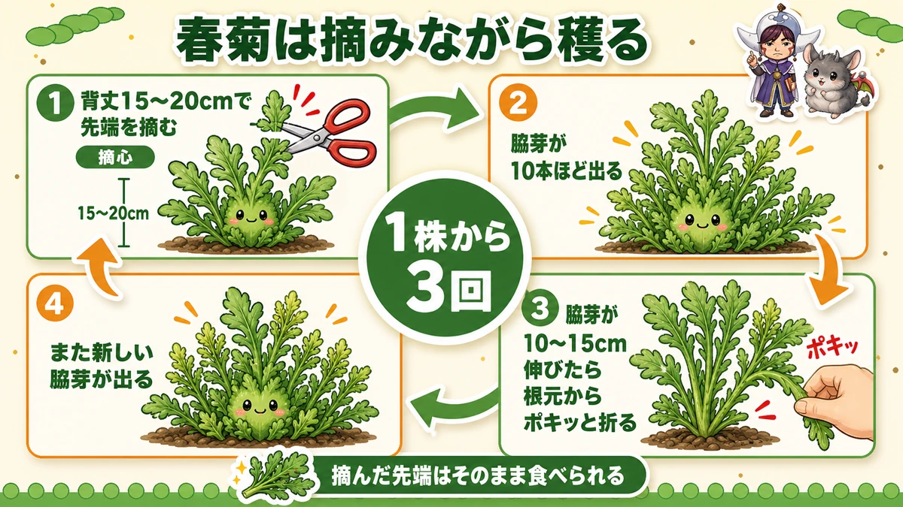
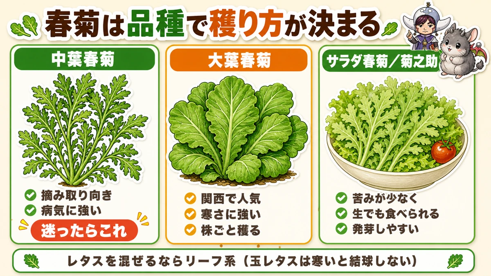
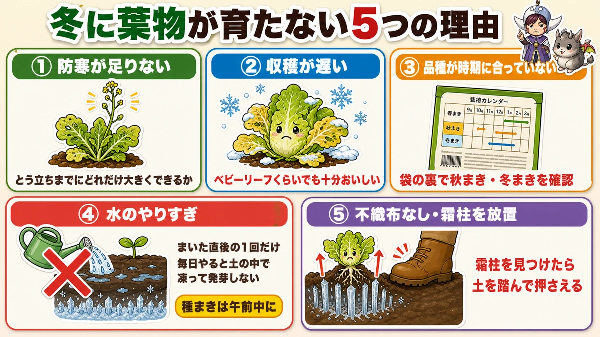
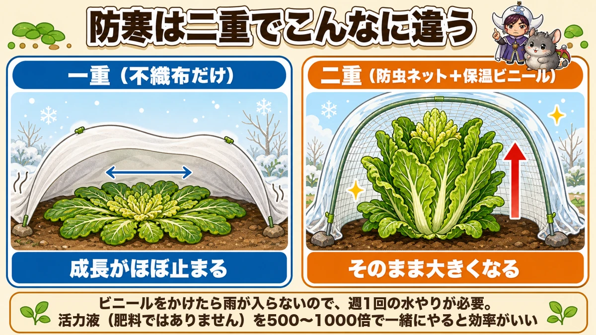

【保存版】秋の葉物は「抜かずに摘む」🥬 1株から3回穫る育て方

🗨️「葉物っていちど穫ったら終わりでしょ？」
🗨️「冬になったら、ぜんぜん大きくならなくなった」
🗨️「そもそも芽が出ない…」
どうも、8150（えいこう）です🌱 家庭菜園歴8年、理科の教員免許を持っていて、有機・無農薬で野菜を育てています。
今日は葉物です。小松菜・水菜・春菊あたりですね。
秋冬野菜のなかでは地味な存在ですが、私はこれがいちばんコスパがいいと思っています。早ければ1か月ちょっとで穫れて、しかも穫り方しだいで1株から何度も収穫できるからです。
そう、ここが今日の本題です。
葉物を株ごと抜いていませんか？
抜いたらそこで終わりです。でも摘むように穫ると、同じ1株から3回くらい穫れます。この違いを知っているかどうかで、同じうねから採れる量がぜんぜん変わります。
※以下の時期は中間地（関東〜関西の平野部）が目安。寒い地域は少し遅らせ、暖かい地域は早めに。種の袋にまく時期が書いてあるので、そこもチェック✨️
📖 この記事の目次
栽培データ
- 科：小松菜・水菜＝アブラナ科／春菊＝キク科（アブラナ科は同じ場所を2年あける）
- タネまき：9月中旬〜10月中旬（春まきは3〜4月）
- 植え付け：なし＝畑やプランターに直まき
- 収穫まで：小松菜・水菜は1か月ちょっと／春菊は1か月半ほど
「抜く」のをやめると、収穫量が3倍になります

いちばん伝えたい話から始めます。
葉物は、株ごと引き抜くのが普通だと思われています。スーパーで売っている姿がそうですからね。でも家庭菜園では、抜かずに摘むほうが断然おトクです。
春菊でやってみると、こうなります
春菊がいちばん分かりやすいので、これで説明しますね。
①背丈が15〜20cmになったら、先端を摘む
これを摘心といいます。成長点、つまり一番先の伸びる部分をハサミで切ってしまいます。「せっかく伸びたのに、もったいない」と思いますよね。私も最初そう思いました。
でもここからが面白いところです。
②先端を止められた株は、脇から芽を出し始める
しかも1本や2本ではありません。1株から10本くらい出てきます。植物は「上に伸びる道」を塞がれると、横の芽を一斉に起こすんです。
③脇芽が10〜15cm伸びたら、根元からポキッと折って収穫
ハサミも要りません。指でちょっとひねると簡単に折れます。
④また新しい脇芽が出てくる
そして②に戻ります。これを繰り返すと、うまくいけば春まで穫り続けられます。私の畑では、だいたい3回は穫れています。
ちなみに①で摘んだ先端、捨てないでください。普通に食べられます。というかここがいちばん柔らかいので、私はその場で味見してしまいます☺️
小松菜・水菜は「外側から」
小松菜や水菜も同じ考え方でいけます。こちらは脇芽ではなく、外側の葉から順番に穫ります。
外葉を3〜4枚かき取って、真ん中は残す。すると中心から新しい葉が出てきて、また穫れます。
サラダ用にちょっとだけ欲しいときに、必要な分だけ摘む。この使い方ができるのが家庭菜園の特権だと思うんですよね。スーパーだと1袋まるごとですから。
ただし、品種を間違えると何度も穫れません

ここ、意外と知られていません。
春菊には大きく分けて2つのタイプがあって、そもそも摘み取りに向かない品種があります。
中葉春菊 ー 何度も穫りたいならこれ
脇芽がどんどん伸びるタイプです。さっきの摘みながら穫る方法は、この品種でやってください。病気にも強いので、無農薬でも育てやすいです。
迷ったらこれで間違いないと思います。
大葉春菊 ー 関西で人気・寒さに強い
関西でよく食べられているタイプです。葉が大きくて、香りが強い。株ごと収穫する前提の品種です。
寒さに強いのが持ち味なので、寒い地域や、冬に長く畑に置きたい人はこちらもアリです。
サラダ春菊・菊之助 ー 春菊が苦手な人へ
苦みが少なくて、生でも食べられるタイプです。春菊の香りが得意じゃない家族がいる場合、これだと食べてくれることがあります。
そしてもうひとつ嬉しいのが、発芽しやすいこと。春菊はもともと発芽率が5割くらいと低めなんですが、この系統は比較的そろいます。「春菊、いつも芽が出ない」という方は、品種を変えてみるだけで解決するかもしれません。
レタスを混ぜるなら「リーフ系」で
ついでに。葉物のうねにレタスを混ぜたくなったら、玉レタスは避けてください。
寒くなると玉レタスは結球しません。丸くならないまま終わります。かわりにリーフレタス・サニーレタス・レタスミックスを選べば、外側から摘みながら長く穫れます。摘み取り作戦とも相性がいいです。
冬に葉物が育たない、5つの理由

秋にまいたのに、冬になったら止まってしまった。これ、原因はだいたい5つに絞れます。
①防寒が足りない
寒さで成長が止まると、小さいまま春を迎えます。そして春になると、大きくならないままとう立ち（花を咲かせようとして茎が伸びること）して終わります。
大事なのは、とう立ちまでにどれだけ大きくできるか。そのための防寒です。
②収穫が遅い
寒い時期の葉物は、いつものサイズまで大きくなりません。「もう少し大きくなってから」と待っていると、霜にやられて葉が黄色くなります。
ベビーリーフくらいのサイズでも、十分おいしいです。むしろ柔らかい。早めに穫ってください。
③品種が時期に合っていない
ほうれん草には夏まき用の品種もあります。袋の裏を見ずに買うと、季節外れのものをまいてしまうことがあります。
秋にまくなら「秋まき」「冬まき」と書いてあるものを。ここは面倒でも袋を確認してください。
④水をやりすぎ
これは寒い時期だけの話ですが、けっこう致命的です。
寒くなってからの種まきは、まいた直後の1回だけで十分です。毎日水をやると、その水が土の中で凍って、種がやられます。
そしてもうひとつ。種まきは午前中にしてください。午後にまいて水をやると、夜のうちに凍ることがあります。
⑤不織布を使わない・霜柱を放っておく
不織布は、寒い時期の葉物にはほぼ必須です。地温を上げてくれるし、乾燥も防いでくれます。べたっとかけるだけでいいので、手間もかかりません。
そしてもうひとつ気をつけたいのが霜柱です。
霜柱が立つと、土が持ち上がります。すると根っこごと浮き上がってしまう。芽が出たばかりの株は、これで枯れます。
対策は単純で、霜柱を見つけたら土を踏んで押さえる。それだけです。不織布をかけていると霜柱は立ちにくくなるので、そこでも役に立ちます。
ちなみに肥料ですが、葉物は元肥を入れなくても大丈夫です。前に作っていた野菜の残り肥料でちょうどいいくらい。入れすぎると虫を呼びます。
防寒は「二重」にすると、見た目で分かるくらい違います

これは実際に見たときちょっと驚きました。
同じ日にまいた同じ品種のほうれん草を、片方は不織布だけ、もう片方は防虫ネットと保温ビニールの二重にしてみたんです。
一重のほうは、葉が地面にべたっと張りついていました。上に伸びずに、放射状に広がっている感じです。
二重のほうは、葉が立ったまま、ふつうに上へ伸び続けていました。
同じ畑で、同じ日にまいた株です。それでもここまで違う。
なので寒くなってきたら、不織布・防虫ネット・保温ビニールを重ねてみてください。1枚増やすだけで、収穫までの時間がぜんぜん変わります。
ビニールをかけたら、水やりが必要になります
ひとつだけ注意点を。
ビニールで覆うと、雨が入らなくなります。つまり自分で水をやらないといけません。目安は1週間に1回です。
そして、これは私のおすすめなんですが、その水やりのときに液体の肥料を薄めて混ぜてしまいます。
有機でやっていると追肥が面倒なんですよね。粒の肥料をまいても、分解に1か月以上かかったりする。でも水やりのついでなら手間はゼロです。
薄さは500〜1000倍くらい。1週間に1回、じょうろ1杯分だけなので、1本買えば1年もちます。これを続けていると、葉の艶がはっきり変わってきますよ。
学ぶ：寒いと葉っぱが地面に張りつくのはなぜ？🔬
理科の時間です。さっき出てきた「葉が地面に張りつく」やつの話をします。
あれ、ロゼットといいます。バラ（ローズ）の花びらのように、葉が放射状に広がっているのでこの名前です。
野菜がサボっているわけではありません。あれは、寒さを生き延びるモードに入った合図なんです。
理由は3つあります。
- 地面の近くのほうが暖かい…土は日中の熱をためこんでいて、地表付近は空気より暖かい。だから身を低くする
- 風に当たらない…背が高いと冷たい風をまともに受けます。低く伏せれば風は上を通り過ぎる
- 葉が重ならず、全部に日が当たる…放射状に広げると、どの葉も影にならない。少ない日ざしを無駄なく使える
寒さで動けないなりに、めちゃくちゃ合理的なことをしているんですよね。
そして身近な例がタンポポです。冬の空き地や道ばたで、タンポポが地面にべたっと張りついているのを見たことありませんか。あれもロゼットです。同じ理由であの形をしています。
お子さんと一緒なら、こんな観察ができます。冬の晴れた日に、外に出てタンポポを探してみてください。地面に張りついたタンポポを見つけたら、次は畑の葉物と見比べる。
「同じ形になってる！」と気づいた瞬間が、いちばん面白いところです。そして「二重にすると立ち上がる」ことも合わせて観察できれば、寒さと植物の関係が体でわかります☺️
まとめ
ここまで読んでくださって、ありがとうございます！
葉物は、育てるより穫り方で差がつく野菜です。
- 株ごと抜かない。春菊は先端を摘む → 脇芽が10本出る → 10〜15cmで折る。これで1株3回
- 小松菜・水菜は外葉から3〜4枚ずつ。真ん中を残せばまた出てくる
- 摘み取りたいなら中葉春菊。寒さ重視なら大葉春菊。苦手な人はサラダ春菊。レタスはリーフ系を
- 冬の失敗5つ＝防寒不足・穫り遅れ・品種違い・水のやりすぎ・不織布なし
- 寒い時期の種まきは午前中に、水は最初の1回だけ
- 防寒は二重に。ビニールをかけたら週1回の水やり（液肥を混ぜると一石二鳥）
まずは中葉春菊を1袋まいて、先端を摘むところまでやってみてください。脇芽がわっと出てきたとき、たぶん「うわ、ほんとに出た」ってなりますよ🥬
次回は、寒くなってからが本番の根菜。冬のにんじんを甘くする話をします🥕
中葉春菊のタネ
摘みながら何度も穫りたいなら、この品種を選んでください。脇芽がどんどん出て、病気にも強いです。
![[商品価格に関しましては、リンクが作成された時点と現時点で情報が変更されている場合がございます。]](https://hbb.afl.rakuten.co.jp/hgb/552615f0.9cc2855e.552615f1.776f7de9/?me_id=1251188&item_id=10000837&pc=https%3A%2F%2Fthumbnail.image.rakuten.co.jp%2F%400_mall%2Fyonezawa%2Fcabinet%2Ftane01%2F10hamono%2Fchubashungikus.jpg%3F_ex%3D240x240&s=240x240&t=picttext "[商品価格に関しましては、リンクが作成された時点と現時点で情報が変更されている場合がございます。]")

不織布
寒い時期の葉物にはほぼ必須です。地温を上げて、霜柱も立ちにくくなります。
![[商品価格に関しましては、リンクが作成された時点と現時点で情報が変更されている場合がございます。]](https://hbb.afl.rakuten.co.jp/hgb/56bc237a.e97551b1.56bc237b.2513ed10/?me_id=1310260&item_id=10000879&pc=https%3A%2F%2Fthumbnail.image.rakuten.co.jp%2F%400_mall%2Fdiokasei%2Fcabinet%2F007fusyokufu%2F12g%2Fimgrc0092049705.jpg%3F_ex%3D240x240&s=240x240&t=picttext "[商品価格に関しましては、リンクが作成された時点と現時点で情報が変更されている場合がございます。]")
液体肥料
ビニールをかけたあとの週1回の水やりに混ぜて使います。500〜1000倍で、1本買えば1年もちます。
![[商品価格に関しましては、リンクが作成された時点と現時点で情報が変更されている場合がございます。]](https://hbb.afl.rakuten.co.jp/hgb/56bc2da1.2bf36c6e.56bc2da2.7b66fad7/?me_id=1347284&item_id=10000008&pc=https%3A%2F%2Fthumbnail.image.rakuten.co.jp%2F%400_mall%2Fmandahakko%2Fcabinet%2Fsyokubutsumanda%2F260306_smn_amn5004.jpg%3F_ex%3D240x240&s=240x240&t=picttext "[商品価格に関しましては、リンクが作成された時点と現時点で情報が変更されている場合がございます。]")
あわせて読みたい